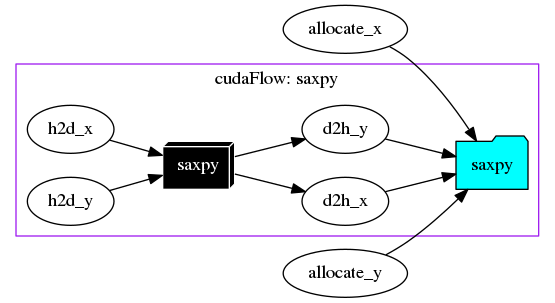
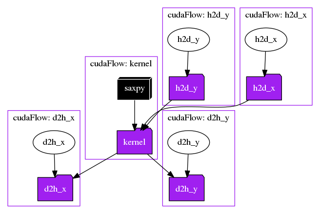
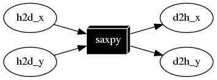

Modern scientific computing typically leverages GPU-powered parallel processing cores to speed up large-scale applications. This chapter discusses how to implement CPU-GPU heterogeneous tasking algorithms with Nvidia CUDA.
Include the Header
You need to include the header file, taskflow/cuda/cudaflow.hpp, for creating a tf::cudaFlow task.
Create a cudaFlow
Taskflow leverages CUDA Graph to enable concurrent CPU-GPU tasking using a task graph model, tf::cudaFlow. A cudaFlow is a task in a taskflow and is associated with a CUDA graph to execute multiple dependent GPU operations in a single CPU call. To create a cudaFlow task, emplace a callable with an argument of type tf::cudaFlow. The following example implements the canonical saxpy (A·X Plus Y) task graph using tf::cudaFlow.
1: #include <taskflow/cuda/cudaflow.hpp>
2:
3:
4: __global__ void saxpy(int n, float a, float *x, float *y) {
5: int i = blockIdx.x*blockDim.x + threadIdx.x;
6: if (i < n) {
7: y[i] = a*x[i] + y[i];
8: }
9: }
10:
11:
12: int main() {
13:
16:
17: const unsigned N = 1<<20;
18:
21:
22: float *dx{nullptr};
23: float *dy{nullptr};
24:
26: [&](){ cudaMalloc(&dx, N*sizeof(float));}
27: ).name("allocate_x");
28:
30: [&](){ cudaMalloc(&dy, N*sizeof(float));}
31: ).name("allocate_y");
32:
34:
39:
40:
42: (N+255)/256, 256, 0, saxpy, N, 2.0f, dx, dy
43: ).name("saxpy");
44:
48: }).name("saxpy");
49: cudaflow.
succeed(allocate_x, allocate_y);
50:
51: executor.
run(taskflow).wait();
52:
54: }
class to create an executor for running a taskflow graph
Definition executor.hpp:50
tf::Future< void > run(Taskflow &taskflow)
runs a taskflow once
Definition executor.hpp:1573
Task emplace(C &&callable)
creates a static task
Definition flow_builder.hpp:742
class to create a task handle over a node in a taskflow graph
Definition task.hpp:187
Task & succeed(Ts &&... tasks)
adds precedence links from other tasks to this
Definition task.hpp:428
class to create a taskflow object
Definition core/taskflow.hpp:73
void dump(std::ostream &ostream) const
dumps the taskflow to a DOT format through a std::ostream target
Definition core/taskflow.hpp:363
class to create a cudaFlow task dependency graph
Definition cudaflow.hpp:56
cudaTask kernel(dim3 g, dim3 b, size_t s, F f, ArgsT &&... args)
creates a kernel task
Definition cudaflow.hpp:1272
cudaTask copy(T *tgt, const T *src, size_t num)
creates a memcopy task that copies typed data
Definition cudaflow.hpp:1348
class to create a task handle over an internal node of a cudaFlow graph
Definition cuda_task.hpp:65
cudaTask & succeed(Ts &&... tasks)
adds precedence links from other tasks to this
Definition cuda_task.hpp:189
cudaTask & name(const std::string &name)
assigns a name to the task
Definition cuda_task.hpp:200
cudaTask & precede(Ts &&... tasks)
adds precedence links from this to other tasks
Definition cuda_task.hpp:182

Debrief:
- Lines 3-9 define a saxpy kernel using CUDA
- Lines 19-20 declare two host vectors,
hx and hy
- Lines 22-23 declare two device vector pointers,
dx and dy
- Lines 25-31 declare two tasks to allocate memory for
dx and dy on device, each of N*sizeof(float) bytes
- Lines 33-48 create a cudaFlow to define a GPU task graph that contains:
- two host-to-device data transfer tasks
- one saxpy kernel task
- two device-to-host data transfer tasks
- Lines 49-53 define the task dependency between host tasks and the cudaFlow tasks and execute the taskflow
tf::cudaFlow is a lightweight abstraction over CUDA Graph. We do not expend yet another effort on simplifying kernel programming but focus on tasking CUDA operations and their dependencies. This organization lets users fully take advantage of CUDA featuress that are commensurate with their domain knowledge, while leaving difficult task parallelism details to Taskflow.
Compile a cudaFlow Program
Use nvcc to compile a cudaFlow program:
~$ nvcc -std=c++17 my_cudaflow.cu -I path/to/include/taskflow -O2 -o my_cudaflow
~$ ./my_cudaflow
Please visit the page Compile Taskflow with CUDA for more details.
Run a cudaFlow on Specific GPU
By default, a cudaFlow runs on the current CUDA GPU associated with the caller, which is typically GPU 0. Each CUDA GPU has an integer identifier in the range of [0, N), where N is the number of CUDA GPUs in a system. You can run a cudaFlow on a specific GPU using tf::Taskflow::emplace_on. The code below creates a cudaFlow that runs on GPU 2.
}, 2);
Task emplace_on(C &&callable, D &&device)
creates a cudaFlow task on the given device
Definition cudaflow.hpp:1666
- Attention
- tf::Taskflow::emplace_on allows you to place a cudaFlow on a particular GPU device, but it is your responsibility to ensure correct memory access. For example, you may not allocate a memory block on GPU
2 while accessing it from a kernel on GPU 0.
An easy practice is to allocate unified shared memory using cudaMallocManaged and let the CUDA runtime perform automatic memory migration between GPUs.
Create Memory Operation Tasks
tf::cudaFlow provides a set of methods for users to manipulate device memory. There are two categories, raw data and typed data. Raw data operations are methods with prefix mem, such as memcpy and memset, that operate in bytes. Typed data operations such as copy, fill, and zero, take logical count of elements. For instance, the following three methods have the same result of zeroing sizeof(int)*count bytes of the device memory area pointed to by target.
int* target;
cudaMalloc(&target, count*sizeof(int));
});
cudaTask memset(void *dst, int v, size_t count)
creates a memset task that fills untyped data with a byte value
Definition cudaflow.hpp:1367
cudaTask fill(T *dst, T value, size_t count)
creates a memset task that fills a typed memory block with a value
Definition cudaflow.hpp:1325
cudaTask zero(T *dst, size_t count)
creates a memset task that sets a typed memory block to zero
Definition cudaflow.hpp:1303
The method cudaFlow::fill is a more powerful version of cudaFlow::memset. It can fill a memory area with any value of type T, given that sizeof(T) is 1, 2, or 4 bytes. For example, the following code sets each element in the array target to 1234.
Similar concept applies to cudaFlow::memcpy and cudaFlow::copy as well.
});
cudaTask memcpy(void *tgt, const void *src, size_t bytes)
creates a memcpy task that copies untyped data in bytes
Definition cudaflow.hpp:1386
Study the Granularity
Creating a cudaFlow has certain overhead, which means fine-grained tasking such as one GPU operation per cudaFlow may not give you any performance gain. You should aggregate as many GPU operations as possible in a cudaFlow to launch the entire graph once instead of separated graphs. For example, the following code creates a fine-grained saxpy task graph using one cudaFlow per GPU operation.
cf.
copy(dx, hx.data(), N).
name(
"h2d_x");
}).name("h2d_x");
cf.
copy(dy, hy.data(), N).
name(
"h2d_y");
}).name("h2d_y");
cf.
copy(hx.data(), dx, N).
name(
"d2h_x");
}).name("d2h_x");
cf.
copy(hy.data(), dy, N).
name(
"d2h_y");
}).name("d2h_y");
cf.
kernel((N+255)/256, 256, 0, saxpy, N, 2.0f, dx, dy).
name(
"saxpy");
}).name("kernel");
Task & precede(Ts &&... tasks)
adds precedence links from this to other tasks
Definition task.hpp:420

The following code aggregates the five GPU operations using one cudaFlow to achieve better performance.

- Note
- We encourage users to understand the parallel structure of their applications to come up with the best granularity of task decomposition. A refined task graph can have significant performance difference from the raw counterpart.
Offload a cudaFlow
By default, the executor offloads and executes the cudaFlow once, if the cudaFlow is never offloaded from its callable. During the execution, the executor first materializes the cudaFlow by mapping it to a native CUDA graph, creates an executable graph from the native CUDA graph, and then submit the executable graph to the CUDA runtime. Similar to tf::Executor, tf::cudaFlow provides several offload methods to run the GPU task graph:
cf.
offload_until([repeat=5] ()
mutable {
return repeat-- == 0; })
});
void offload()
offloads the cudaFlow and executes it once
Definition cudaflow.hpp:1654
void offload_until(P &&predicate)
offloads the cudaFlow onto a GPU and repeatedly runs it until the predicate becomes true
Definition cudaflow.hpp:1618
void offload_n(size_t N)
offloads the cudaFlow and executes it by the given times
Definition cudaflow.hpp:1649
After you offload a cudaFlow, it is considered executed, and the executor will not run an offloaded cudaFlow after leaving the cudaFlow task callable. On the other hand, if a cudaFlow is not offloaded, the executor runs it once. For example, the following two versions represent the same execution logic.
});
});
cudaTask single_task(C c)
runs a callable with only a single kernel thread
Definition for_each.hpp:169
Update a cudaFlow
Many GPU applications require you to launch a cudaFlow multiple times and update node parameters (e.g., kernel parameters and memory addresses) between iterations. tf::cudaFlow::offload allows you to execute the graph immediately and then update the parameters for the next execution. When you offload a cudaFlow, an executable graph will be created, and you must NOT change the topology but the node parameters between successive executions.
4:
5: cf.
kernel(task, grid2, block2, shm2, my_kernel, args2...);
7:
8: });
Debrief:
- Line 2 creates a kernel task to run
my_kernel with the given parameters.
- Line 3 offloads the cudaFlow and performs an immediate execution.
- Line 5 updates the parameters of
my_kernel through its task.
- Line 6 executes the cudaFlow again with updated kernel parameters.
Between successive offloads (i.e., executions of a cudaFlow), you can update the task parameters, such as changing the kernel execution parameters and memory operation parameters. However, you must NOT change the topology of an offloaded cudaFlow. Each method of task creation in tf::cudaFlow has an overload that updates the parameters of the task created from the same creation method.
- Attention
- There are a few restrictions on updating task parameters in a cudaFlow. Notably, you must NOT change the topology of an offloaded graph. In addition, update methods have the following limitations:
- kernel task
- The kernel function is not allowed to change. This restriction applies to all algorithm tasks that are created using lambda.
- memset and memcpy tasks:
- The CUDA device(s) to which the operand(s) was allocated/mapped cannot change
- The source/destination memory must be allocated from the same contexts as the original source/destination memory.
Use cudaFlow in a Standalone Environment
You can use tf::cudaFlow in a standalone environment without going through tf::Taskflow and offloads it to a GPU from the caller thread. All the features we have discussed so far apply to the standalone use. The following code gives an example of using a standalone cudaFlow to create a saxpy task graph that runs on a GPU.
When using cudaFlow in a standalone environment, it is your choice to decide its GPU context. The following example creates a cudaFlow and executes it on GPU 0.
class to create an RAII-styled context switch
Definition cuda_device.hpp:293
- Note
- In the standalone mode, a written cudaFlow will not be executed untile you explicitly call an offload method, as there is neither a taskflow nor an executor.